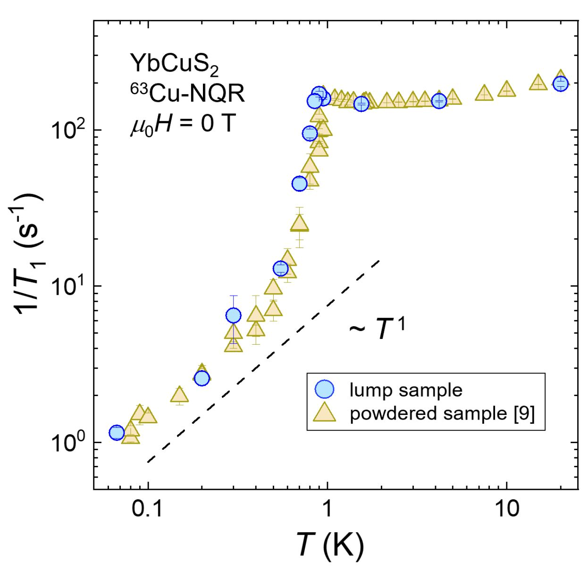
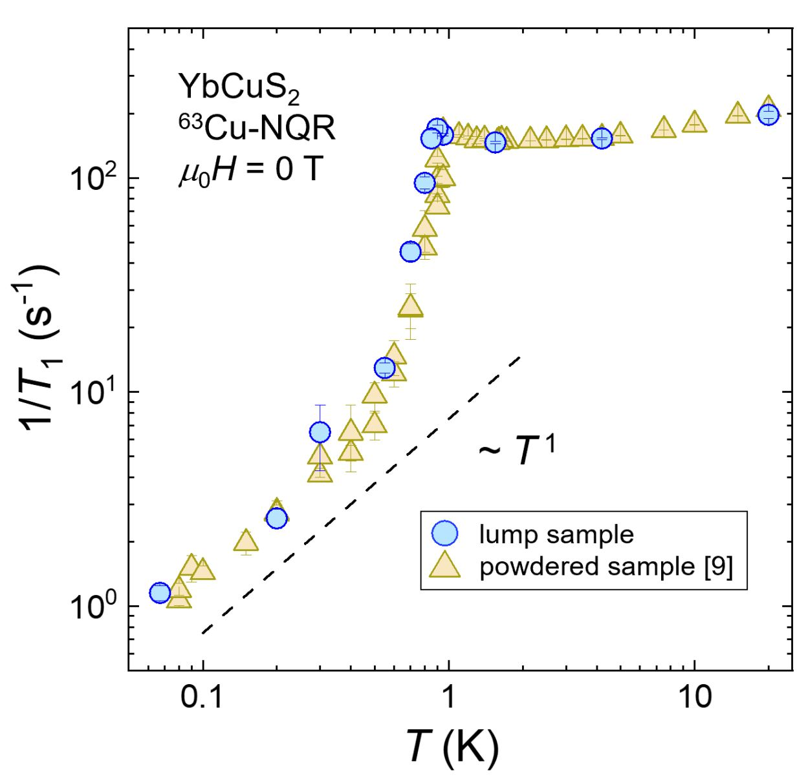

News
◆Jul 07, 2025
I gave a poster presentation at International Conference on Strongly Correlated Electrons Systems (SCES) 2025 held in Montréal, Canada.
◆Apr 01, 2025 I have joined the Macroscopic Quantum Phenomena Laboratory
at Tohoku University as an assistant professor.◆Mar 24, 2025 I have obtained a Ph.D. in Science.
◆Mar 17, 2025 Our paper on NMR measurements in YbCuS2 was ranked among Top 20 Most Downloaded Articles -- February 2025 in the Journal of the Physical Society of Japan.
◆Jan 29, 2025
Our paper on NMR measurements in the Yb zigzag-chain semiconductor YbCuS2 has been published in the Journal of the Physical Society of Japan.

◆Jan 24, 2025 I successfully completed my doctoral thesis defense.
◆Dec 24, 2024 Our paper about Lu/Se substitution effects on the Yb zigzag-chain semiconductor YbCuS2 has been published in the arXiv.
◆Dec 23, 2024 Our paper on NQR measurements in the Yb zigzag-chain semiconductor YbCuS2 under pressure has been published in the arXiv.
◆Dec 17, 2024 Our paper on NMR measurements in YbAgSe2 was ranked among Top 20 Most Downloaded Articles -- November 2024 in the Journal of the Physical Society of Japan.
◆Nov 15, 2024
Our paper on NMR measurements in YbAgSe2 was ranked among Top 20 Most Downloaded Articles -- October 2024 in Journal of the Physical Society of Japan.

◆Oct 11, 2024
Our paper on NMR measurements in the Yb zigzag-chain semiconductor YbAgSe2 has been published in the Journal of the Physical Society of Japan.


◆Sep 17, 2024
I gave an oral presentation at the Physical Society of Japan (JPS) 2024 Anuual (79th) Meeting held in Hokkaido University (Lecture number: 17aS105-10).
◆Aug 22, 2024
I was invited as a speaker at KUJI QMAT Seminar (former OSS journal club) #42, which is a closed format with attendance by invitation from the managing groups in Cambridge, Kyoto, Seoul, and Salerno.
◆Jul 03, 2024
I received the Best Poster Award at International Conference on Magnetism 2024 (ICM 2024) held in Bologna, Italy!


◆May 31, 2024
I received the Excellent Poster Award at 「Unveiling, Design, and Development of Asymmetric Quantum Matters」FY2024 Area General Meeting/Public Research Kickoff Meeting held in Higashihiroshima!

◆Apr 30, 2024 I received the Student Presentation Award of the Physical Society of Japan (Division 8) at the Physical Society of Japan (JPS) 2024 Spring Meeting!
◆Mar 19, 2023
I gave an oral presentation at the Physical Society of Japan (JPS) 2024 Spring Meeting (Lecture number: 19aH1-10).
◆Jan 05, 2024
I participated in "Unveiling, Design, and Development of Asymmetric Quantum Matters" topical meeting held in Kyushu Institute of Technology.
◆Oct 11, 2023
I gave an poster presentation at "H-Physics Workshop: Topology, spin-orbit interactions and superconductivity in strongly correlated quantum materials under extreme conditions" held in Grenoble, France.
◆Sep 28, 2023
I have been honored with Special Researcher Award from The SATOMI Scholarship Foundation.

◆Sep 18, 2023
I gave an oral presentation at the Physical Society of Japan (JPS) 2023 Anuual (78th) Meeting held in Tohoku University (Lecture number: 18pB103-2).
◆Aug 28, 2023
I gave a poster presentation at "Unveiling, Design, and Development of Asymmetric Quantum Matters" topical meeting held in Hokkaido University.
◆Jul 28, 2023 Our paper on NMR measurements in UTe2 under pressure has been published in the Science Advances.
◆Jul 26, 2023
I was recognized by JASSO for achieving particularly outstanding academic results in my doctoral program.


◆Jul 21, 2023
Our paper on NQR and specific-heat measurements in YbCuS2 has been published in the
Communications Materials.


◆Jul 05, 2023
I gave a poster presentation at International Conference on Strongly Correlated Electrons Systems (SCES) 2023 held in Incheon, Korea.
◆Jun 11, 2023
I received the Excellent Poster Award at "Unveiling, Design, and Development of Asymmetric Quantum Matters" kick-off meeting held in Okayama University!

◆May 12, 2023 We held an open lab at Lorentz Festival 2023.
◆Mar 25, 2023
I gave an oral presentation at the Physical Society of Japan (JPS) 2023 Spring Meeting (Lecture number: 25aC1-3).
◆Sep 28, 2022
I was adopted as "JSPS Research Fellowship for Young Scientists (DC2)".


◆Sep 16, 2022 Our paper on NMR measurements in the Kondo insulator YbIr3Si7 has been published in the Physical Review B.
◆Sep 15, 2022 I gave an oral presentation at the Physical Society of Japan (JPS) Autumn Meeting 2022 held in Tokyo Institute of Technology (Lecture number: 15aW631-9).
◆Jul 26, 2022
I was recognized by JASSO for achieving particularly outstanding academic results in my master's program.


◆Jul 25, 2022
I gave a poster presentation at International Conference on Strongly Correlated Electrons Systems (SCES) 2022 held in Amsterdam, The Netherlands.
◆May 13, 2022 I was adopted as "Advanced Quantum Technology Fellowship to Create the Future", Kyoto University.
◆Apr 23, 2022 I renewed the English site.
◆Apr 01, 2022 I continued on to the doctoral program at the Department of Physics I, Kyoto University.
◆Mar 17, 2022
Our paper on NQR measurements in the Yb zigzag-chain semiconductor YbCuS2 has been published in the Journal of Physics: Conference Series.
 

◆Mar 15, 2022
I gave an oral presentation at the Physical Society of Japan (JPS) 2022 Anuual (77th) Meeting (Lecture number: 15pGB11-9).
◆Jan 31, 2022 Master thesis presentation was held.
◆Jan 19, 2022
Our paper on NQR measurements in the Yb zigzag-chain semiconductor YbCuS2 has been published in the arXiv.


◆Dec 17, 2021 I received the Bronze Award For the Best Poster Presentation at Oxide Superspin (OSS) 2021 workshop held in Kyoto, Japan!

- © 2021 Fumiya HORI
- This page has been built with the aid of HTML5 UP